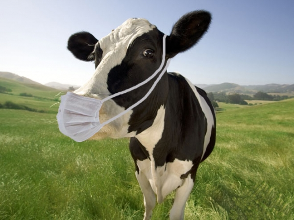

Redes Sociais


Parceiros em lavouras comunitárias e agricultores familiares agroecológicos: um estudo comparativo entre agricultura familiar em território de agricultura tradicional de Minas Gerais e agricultura agroecológica do centro de Rondônia
A agricultura familiar, com resquicios e traços marcantes de vida camponesa, se faz presente no mundo contemporâneo, e ainda, de maneira relevante no Brasil atual. Esse modo de produção destaca-se no meio rural brasileiro e, para muitos pesquisadores, tem um caráter funcional ao capitalismo. Os agricultores familiares estão presentes em diferentes regiões do país e submetidos às distintas realidades sociais e econômicas. Esta pesquisa realiza um estudo comparativo entre agricultores familiares parceiros de comunidades rurais do município de Senhora dos Remédios, localizados na mesorregião de Campos das Vertentes, e agricultores familiares do Território Centro/Leste do estado de Rondônia. Para tanto, são avaliados os elementos que integram a esfera produtiva, com ênfase nos programas sociais de âmbito local coordenados pela Prefeitura Municipal de Senhora dos Remédios, em Minas Gerais, e, em Rondônia, pela Comissão Pastoral da Terra (CPT), por meio dos Projetos Padre Ezequiel e Terra Sem Males. Em Senhora dos Remédios, Minas Gerais, o Estado promove o arrendamento de terras privadas para cultivo solidário de alimentos entre os agricultores familiares sem-terra através do Programa Lavouras Comunitárias. Esse programa busca sustentabilidade social e alimentação de agricuttores familiares através da produção de milho e feijão, de maneira convencional, entre parceiros sem-terra. Por sua vez, no Território Centro/Leste de Rondônia, os projetos da CPT disponibilizam assessoria técnica especializada aos agricultores familiares para produção agroecológica. A dissertação tem como base teórica o desenvolvimento rural sustentável, através da análise dos parâmetros sociocultural e ambiental como sustentáculo à produção dos agricultores familiares/campones. Também são abordadas e analisadas as relações capitalistas de arrendamento, formas não-capitalistas (parceria) e o capital social revertido para os agricultores familiares parceiros e agroecológicos.
